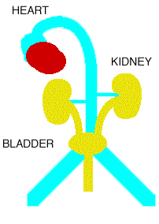

|
|
CHRONIC
Introduction
How the Kidney Works
What the kidneys do
When kidneys fail
Chronic Kidney Disease
End Stage Renal Disease
CKD Curriculum
MDRD GFR
MDRD SI GFR
Saving veins
AV Access
World Kidney Day
NEPHROQUEST
Functions of the Kidney
The challenge of ESRD
CKD in a nutshell
What is dialysis
Hemodialysis
Peritoneal Dialysis
What is a transplant?
Nutrition
Patient Discussion
CKD links
Self Assessment Quizes
NKF's People Like US
The PCP
nephron.com
|
How the Kidney Works Blood Flow and FiltrationBlood is pumped from the heart through large blood vessels to the kidneys. The kidneys filter the blood, removing waste products and excess water. The cleaned blood is returned to the body through the veins, and the waste water passes through tubules where it is concentrated and eliminated as urine. The kidneys are about the size of a fist and lie in the back, partly protected by the lower ribs. Each kidney contains about one million filters, called nephrons. The Nephron: The Basic Filter UnitEach nephron consists of a tiny ball of blood vessels called a glomerulus, surrounded by a cup-shaped structure called Bowman's capsule. Blood enters the glomerulus under pressure, and water, salts, glucose, amino acids, and waste products are pushed out of the blood into the capsule. From Bowman's capsule, this filtered fluid flows through a long tubule. As it travels, the body reclaims useful substances — glucose, amino acids, water, and important electrolytes — back into the bloodstream. What remains becomes urine. Two Kidneys Working TogetherTogether, the two kidneys filter about 200 liters of blood every day, producing about 1–2 liters of urine. This continuous process keeps the blood clean and the body's chemistry in balance. The kidneys receive about 20–25% of the heart's entire output of blood with every heartbeat, reflecting how critical their role is in maintaining health. What Do the Kidneys Do?Beyond filtering blood, the kidneys perform six essential functions:
|
| About The Nephron Information Center | Contact the webmaster: fadem@nephron.com |
| © 2004-21 Nephron Information Center. All Rights Reserved. No part of this page can be reproduced without permission of the author. | ← Back to Patient Education |